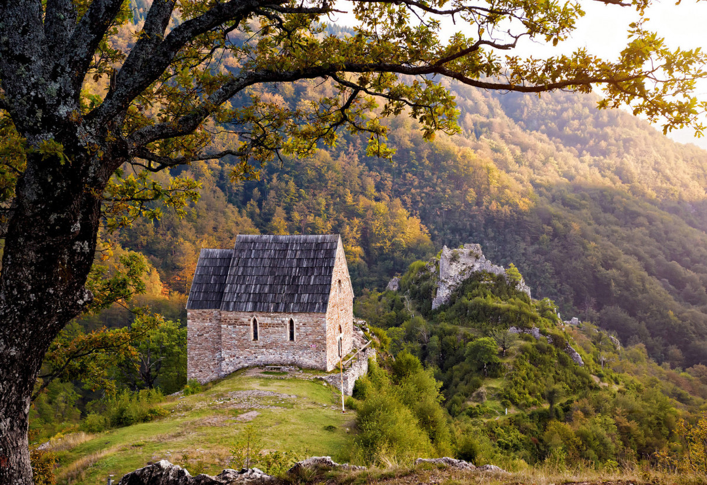
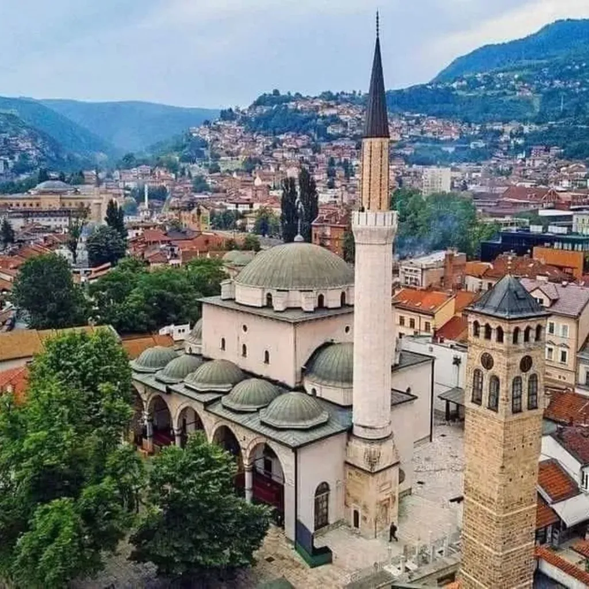
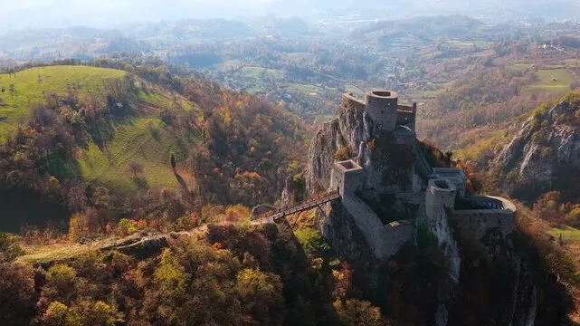
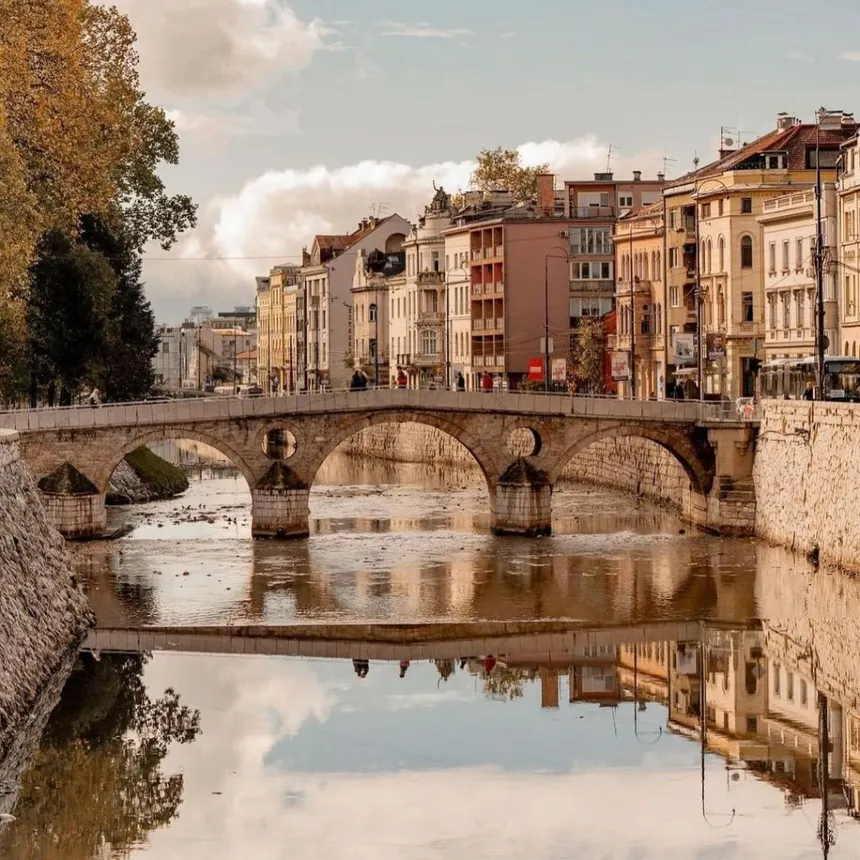
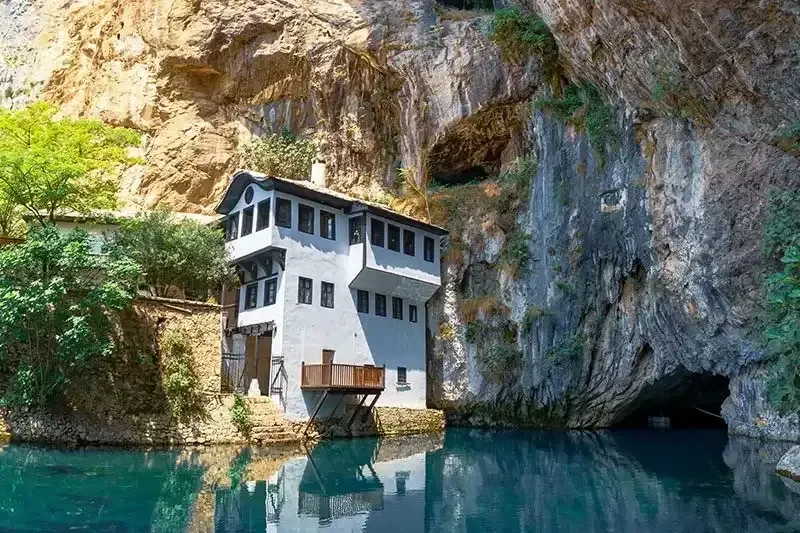
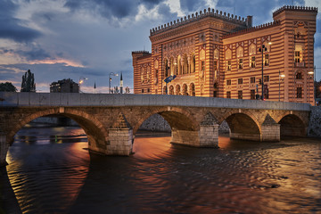

Stari grad Bobovac
Bobovac je bio srednjovjekovno kraljevsko utvrđenje i jedno od najvažnijih sjedišta bosanskih vladara. Smješten na nepristupačnom brdu, imao je ključnu stratešku ulogu u odbrani Bosanskog kraljevstva.
DetaljiOd srednjovjekovnih utvrda do osmanske arhitekture — kratki uvod u baštinu koju možete upoznati kroz kartice ispod.

Bobovac je bio srednjovjekovno kraljevsko utvrđenje i jedno od najvažnijih sjedišta bosanskih vladara. Smješten na nepristupačnom brdu, imao je ključnu stratešku ulogu u odbrani Bosanskog kraljevstva.
Detalji
Gazi Husrev-begov kompleks predstavlja jedno od najvažnijih osmanskih arhitektonskih i kulturnih cjelina u Sarajevu. Izgrađen u 16. stoljeću, kompleks je centar vjerskog, obrazovnog i društvenog života grada već gotovo pet stoljeća. U njegovom sklopu nalaze se džamija, medresa, biblioteka i bezistan, što ga čini jedinstvenim urbanim ansamblom.
Detalji
Kula u Srebreniku je srednjovjekovna utvrda iz 13. stoljeća smještena na strmoj stijeni iznad doline rijeke Tinje, izgrađena radi odbrane i kontrole važnih trgovačkih puteva. Zbog svog položaja i očuvanih zidina spada među najznačajnije primjere srednjovjekovne fortifikacijske arhitekture u Bosni i Hercegovini.
Detalji
Latinska ćuprija je kameni most iz osmanskog perioda koji spaja dvije obale rijeke Miljacke u starom dijelu Sarajeva. U njegovoj neposrednoj blizini 1914. godine izvršen je atentat na nadvojvodu Franju Ferdinanda, događaj koji je označio početak Prvog svjetskog rata.
Detalji
Blagajska tekija je derviški kompleks iz osmanskog perioda smješten u podnožju stijene kod izvora rijeke Bune. Izgrađena je u 16. stoljeću kao mjesto okupljanja i duhovnog života pripadnika sufijskog reda. Tekija predstavlja spoj osmanske arhitekture i prirodnog ambijenta, što joj daje poseban kulturni i historijski značaj.
Detalji
Vijećnica Sarajevo je monumentalna građevina iz austrougarskog perioda, izgrađena krajem 19. stoljeća u pseudo-maurskom stilu. Prvobitno je služila kao gradska uprava i biblioteka, a danas je jedan od najprepoznatljivijih simbola Sarajeva.
Detalji